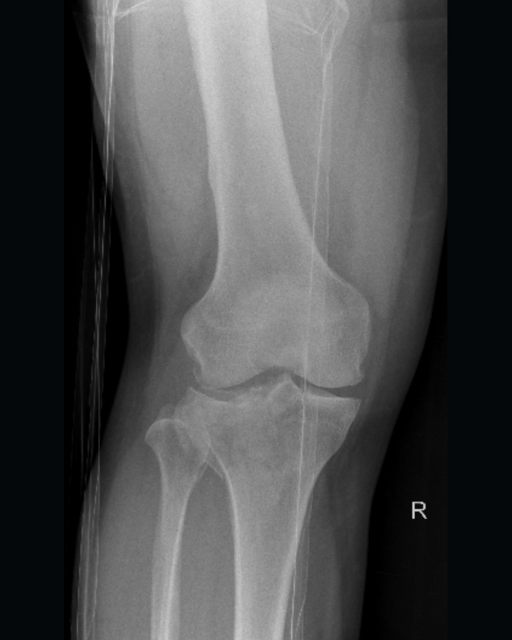
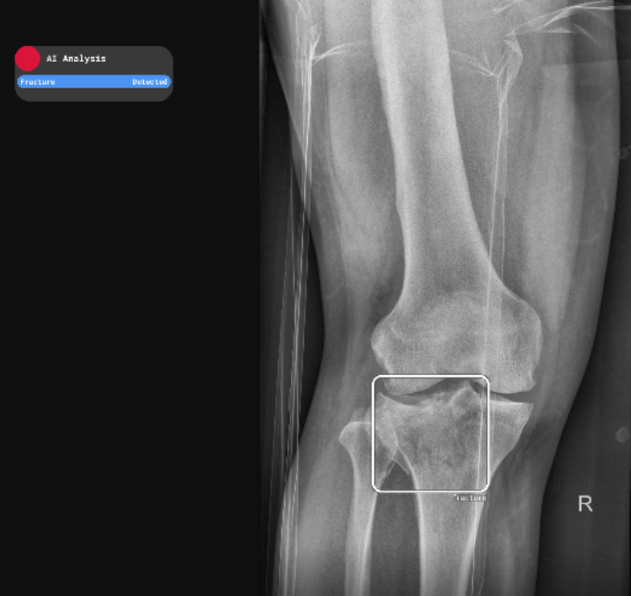
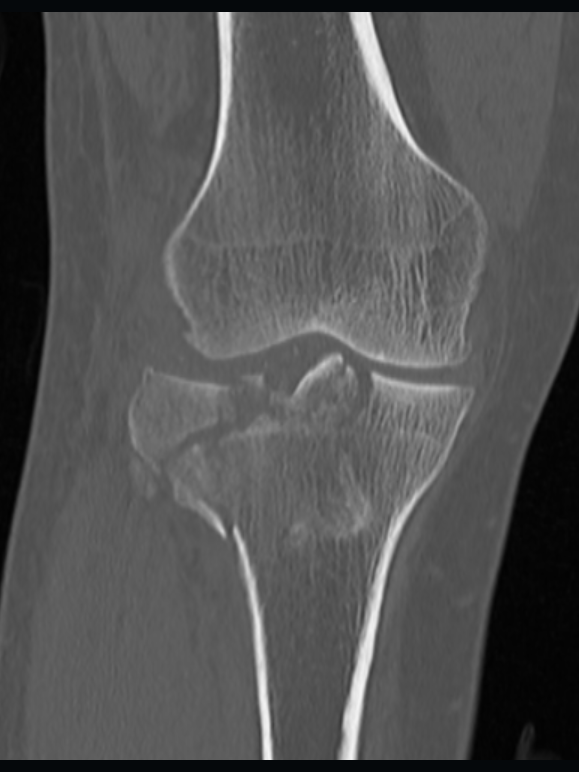
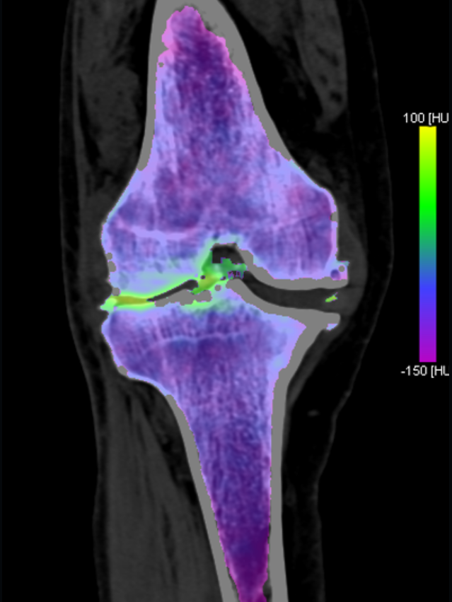
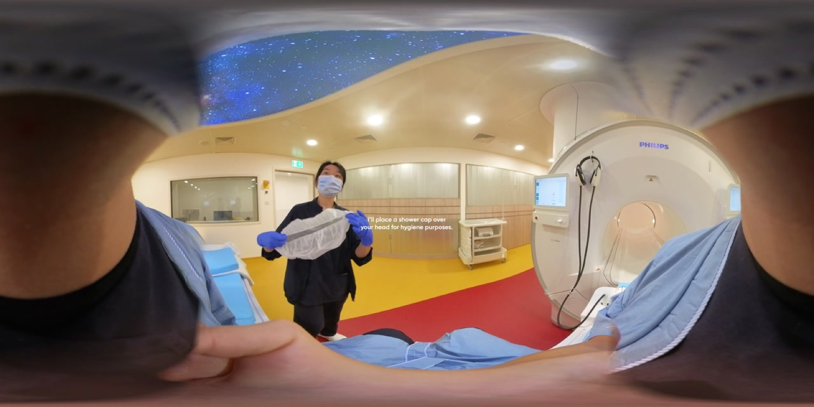
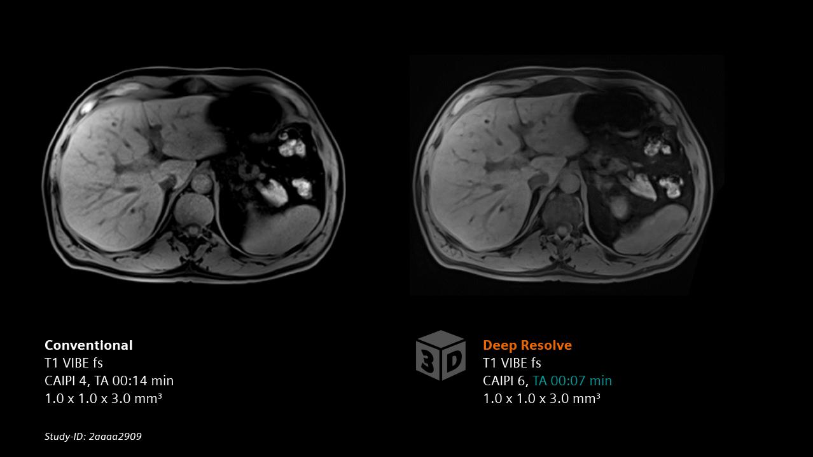

03:00Two patients, one night. Every film is screened by AI.
A knee that cannot bear weight, and a first MRI for a patient who is frightened of the scanner. The AI screens each emergency film before a radiologist opens it. Make the calls, then see what the AI, the scanner and the clinicians changed.
AI screens every ED extremity film
AI rebuilds the MRI in less time
Clinicians build the tools themselves
90 seconds · two scenarios · touch to begin

De-identified clinical image
Case 1 · right knee · AP
100%
Scenario A · fracture or not · film 1 of 4
A man fell and cannot bear weight on his right knee.
Is there a fracture?

AI analysis · same view
All four films read. Your call matched the reporting radiologist on 0 of 2 cases.
The AI agreed with the radiologist in both. That agreement is the point: it is checked, not trusted.
Tap an answer. The AI overlay is revealed afterwards, never before.
Scenario A · case 1 · fracture
The CT showed the fracture. Dual-energy CT showed it had bruised the bone.

De-identified clinical image
Coronal bone window. A coronal split fracture runs through the lateral tibial plateau.
100%
Spectral data from the same acquisition maps bone-marrow oedema — the bruise inside the bone that plain CT cannot show. It is how an occult fracture is confirmed without an MRI slot.
Same CT · 3D Lab
The surgeon plans from the render, not a print.
3D model · drag to rotate
3D view needs WebGL. The still render and the AR link below still work.
AR opens on an iPad or iPhone (Apple Quick Look). On a laptop the model above is the view. Model decimated for on-stand display — not for diagnostic use.
The 3D Lab workflow
Render — a photorealistic surface model built from the CT that was already acquired.
Cut-plane — the same model sectioned, so the internal fracture configuration is visible, not just the surface.
Share, or print — the model is shared securely for discussion and planning; a physical print is used only when handling it adds something the render cannot.
279 complex-fracture candidates over about two years have gone through this digital-first route. Modelled saving for each print avoided: 0.73–1.33 kWh and 0.6–1.3 kg CO₂.
Scenario A · case 2 · no fracture
No fracture on the film — and the patient still cannot put weight on it.

De-identified clinical image
No marrow oedema on the fusion map. Nothing for the spectral data to flag.
100%
Dual-energy CT did what it was ordered to do: it excluded an occult fracture the same night, without an MRI slot and without an admission to reach a scanner.
No fracture. Degenerative change explains the pain. Analgesia, physiotherapy, and home.
What this case teaches
A negative AI reading is information, not a dismissal.
The tool flagged no fracture, the radiologist agreed, and the patient still could not weight-bear. The next step was a pathway decision, not a second opinion on the same film.
Degenerative disease is the commonest cause of a painful knee that is not broken.
Osteophytes and joint-space loss are visible on the sagittal reformat. The answer to "why does it hurt?" is not always "what did we miss?".
The same scan answered both questions.
One dual-energy acquisition gave the fracture answer and the marrow answer. That is what replaced admission for cross-sectional imaging.
Scenario B · before the scan
She has just been told she has a liver tumour. Tomorrow is her first MRI.
She is anxious, she is claustrophobic, and she speaks Hokkien. That combination is why scans get abandoned, repeated, or done under sedation.

Room footage · preparation video
The room she will lie in, filmed once so she can walk through it the night before.
The evening before, she opens a link on her own phone. A clinician built it: the scanner room in 360°, breath-hold practice, and the sound the machine actually makes. No headset, no app to install.
The link needs a connection. Everything else on this station runs offline.
Scenario B · in the scanner
The same images, in a shorter scan.
AI reconstruction rebuilds the image from less acquired data. The scan ends sooner, the image stays sharp, and the patient spends less time inside the bore — which is exactly the part that makes a claustrophobic patient want the scan to stop.
Two scans, one timetable
Illustrative timing, not a measured chart. The ratio is the 63% used in the comparison beside it.
Standard
0%
With AI reconstruction
0%
Time inside the bore
Not started.
Median reduction about 37% across 8 musculoskeletal anatomies — an initial evaluation, MSK only. The timeline above illustrates the ratio, not a timing chart.
Shorter time in the bore is the clinical point: less opportunity for anxiety to turn into an abandoned scan, a repeat, or sedation. Our own paired standard and reconstructed images are not on this station; the example opposite is the vendor's. What we measured here is scan time.
The vendor's own comparison

Vendor example, not our data. The same liver slice from Siemens Healthineers: conventional acquisition 14 s, Deep Resolve 7 s, identical 1.0 × 1.0 × 3.0 mm³ voxel.
Siemens Healthineers ↗
What she noticed
The room was already familiar.
She had walked through it on her own phone the night before, so the bore was not a surprise.
The breath-holds were not new.
She had practised holding her breath at home. In the scanner she was repeating something known.
It finished sooner than she expected.
AI reconstruction cut the acquisition short. At one month, 16 of 16 patients rated the preparation positively and would recommend it.
Built here, not bought
Four tools a clinician wrote, and the 3D work behind them.
Most used
pRIMe-MRI
A 360° preparation experience for MRI: an interactive scanner room, guided breath-hold, real scanner audio. Narration in six languages including Hokkien and Cantonese. Phone only, no headset.
Clinical 3D examples from the Rad-ART study, playing locally — no network needed.
Takeaway
Smart Radiology augments patient care in three ways.
01 · new care pathways
A film that is negative but still hurts goes to dual-energy CT the same night, where the usual alternative is admission for cross-sectional imaging. A patient who is frightened of the scanner rehearses it at home, on her own phone, in her own language.
02 · validated technology
AI screens every ED extremity radiograph; in the audit it caught 6 fractures the first reports missed, and radiologists caught the 7 it missed. Reconstruction shortened MRI scans by about 37% across 8 musculoskeletal anatomies in an initial evaluation.
03 · clinician-builders
A radiologist wrote the preparation tool, another wrote the roster planner, radiographers run and build the 3D Lab. New capability inside the clinical role, without a software team or a research budget.
Scenario A · fracture or not
Fracture found: CT, then a 3D render used for surgical planning.
Fracture excluded: dual-energy CT answered it the same night.
Both readings were checked against the radiologist, never instead of one.
Scenario B · priming and speed
Preparation removed the surprise from a first MRI, in Hokkien.
AI reconstruction cut time inside the bore by about 37%.
16 of 16 patients rated it positively and would recommend it.
What this does not claim. Studies negative on both AI and the report were not independently re-read, so sensitivity is likely an overestimate. The 37% applies to musculoskeletal protocols, not to every scan. The manuscript is in preparation, not published.
The pattern: measure the problem, validate the tool on our own patients, keep the radiologist as the final interpreter, and let the people who use the tools build them. That is what makes it a model other hospitals could adopt.
Smart Radiology · board visit summary
What changed, and what it rests on
Validate before deployment. 1,102 consecutive ED radiographs were audited with the AI output withheld from the reporting radiologist.
Keep the radiologist in the decision. The tool flags; the radiologist interprets. AI caught 6 fractures the initial reports missed; radiologists caught 7 the AI missed.
Answer the patient's question. Dual-energy CT settled an occult fracture the same night, and a 360° preparation experience got an anxious patient through her first MRI.
In one line: Smart Radiology augments patient care through new care pathways, validated technology, and clinician-builders who write the tools they use.
Sensitivity
96.6%
Negative predictive value
99.2%
False positives
26 studies (2.4%)
Turnaround before deployment
22 min office hours · 80 min overnight
MRI AI reconstruction
about 37% shorter in an initial evaluation, 8 musculoskeletal anatomies
MRI preparation experience
16 of 16 patients positive at one month
Limitation. Studies negative on both AI and the report were not independently re-read, so sensitivity is likely to be overestimated.
Clinical images on the station are de-identified and used for teaching. Not for diagnostic use.